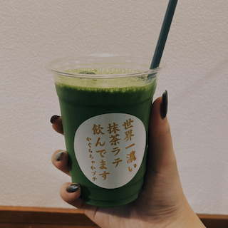
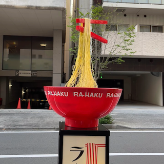

hotel slash 川崎

撮影者:本多 撮影日:2022年3月12日
/(スラッシュ)とはシンプルなフォルムでありながら、日付や並列など日常の中で多種多様な意味で使われている文字。そんな/(スラッシュ)にインスパイアされたホテルの常識にとらわれない他にはないユニークな滞在をイメージしたマーク。
かぐらちゃかプチ 浅草

撮影者:本多 撮影日:2022年9月8日
浅草にあるかぐらちゃかプチというお店の看板商品である「宇宙一濃い抹茶ラテ」。濃さが1~8まで選べ、6濃いから世界一濃い抹茶ラテ飲んでますシールがつく。
新横浜ラーメン博物館

撮影者:本多 撮影日:2022年5月28日
全国各地のラーメンを飛行機を乗らずに食べに行けるというコンセプトのもと生まれたラーメン博物館のユニークな動くオブジェ。館内には他にもラーメンの歴史を知ることのできるギャラリーが展示されている。
参考サイト
スラッシュ川崎 公式ホームページ(外部サイト)
かぐらちゃかプチ 公式インスタグラム(外部サイト)
新横浜ラーメン博物館 公式ホームページ(外部サイト)